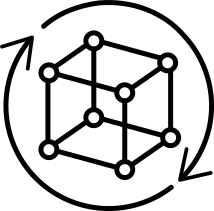

The Almighty Prototype
 Hindsight is completely unforgiving. Looking back & observing oversights is a luxury most projects cannot afford. Allowing yourself space to fail & learn at an early stage of a project has advantages. It also allows a project to grow while preventing journey bottlenecks and minimising drop-offs.
But I know what the user wants
Stakeholders or clients often do not see the true value of prototyping. Why budget time refining at the beginning of the project? But prototyping is not refining but rather narrowing the focus. The 'agile approach' expects us to deploy a 'minimum viable product' (MVP) as soon as possible & iterate on it. In the panic to get to market, it is easy to overlook the word 'viable' in MVP.
Prototyping & user testing at an early stage will provide a solid, iterable foundation. I have been involved with projects where the stakeholders were convinced that they knew their users. The designers & developers had reservations about the proposed way forward but their concerns were down-played or ignored. Work continued, the project launched and (unsurprisingly) did not get the traction hoped for.
We took a closer look at the analytics and conducted some user testing. The data showed that the stakeholders did not understand their users as well as they claimed. There were clear drop-off points in the user journey which aligned with the designers' predictions. We were able to address the issues but it extended the project timeline.
Hi vs Lo fidelity
The stage of the project as well as the project type can help decide on the fidelity of the prototype. Some projects are so new & different that you have to create your own interaction paradigm. Other projects can leverage existing paradigms & best practises. Both extremes benefit from prototyping, but the role the prototype plays is different.
For new interaction paradigms, a fast & cheap prototyping technique is very helpful. You can mock up interactions and program states on pieces of paper or post-it notes. These prototypes give great insights into how to use & interact with the product.
A higher fidelity prototype can work well later in a project. Richer representations are great for user testing. They can provide motivation that a proposal or approach needs refining. A high fidelity prototype can illuminate oversights and issues.
Talk is cheap
Many stakeholders are, "obsessively compulsively indecisive". Or in other words, "they do not know what they want, but they know that they want it now".
We faced this issue on a project where the stakeholders insisted we had everything we needed to start development. We disagreed, but decided we needed to be proactive. We prototyped some of the designs using Framer.
We sent the stakeholder a preview link of the prototype when an amazing thing happened. The stakeholders replied with a detailed critique of our work. This critique included questions on the design, user flows as well as the use of some components. We then revealed that we had merely mocked up the very same designs they had given us. The stakeholders were shocked. They immediately calmed down and allowed us some room to refine the product.
Multi-purpose
The ability to rapidly & effectively prototype can provide different results or insights. Some general payoffs include:
- Provide a concrete example to an abstract concept.
- Refine journeys & stream line interactions.
- Test & confirm assumptions without notable initial investment or commitment.
- Support or refute user experience or design assumptions.
It took me a while to realise the full potential of prototyping. But prototyping became an indispensable personal skill. It streamlines the conversion from abstract theory to practical execution with less surprises along the way.